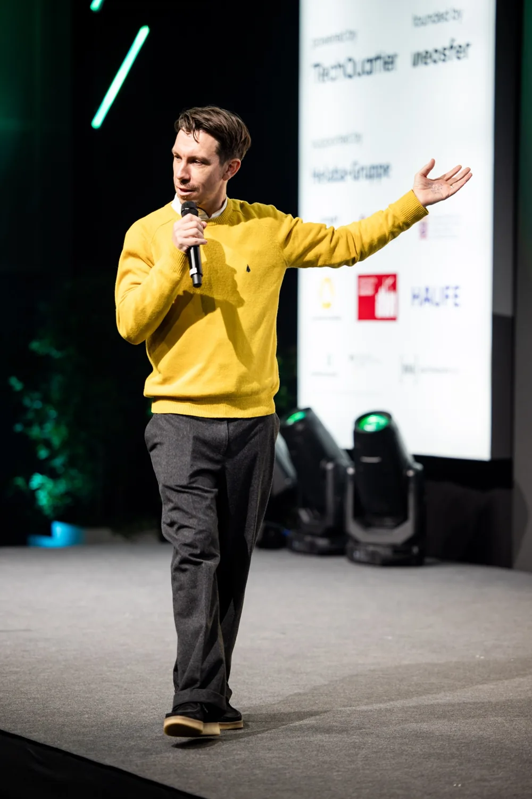
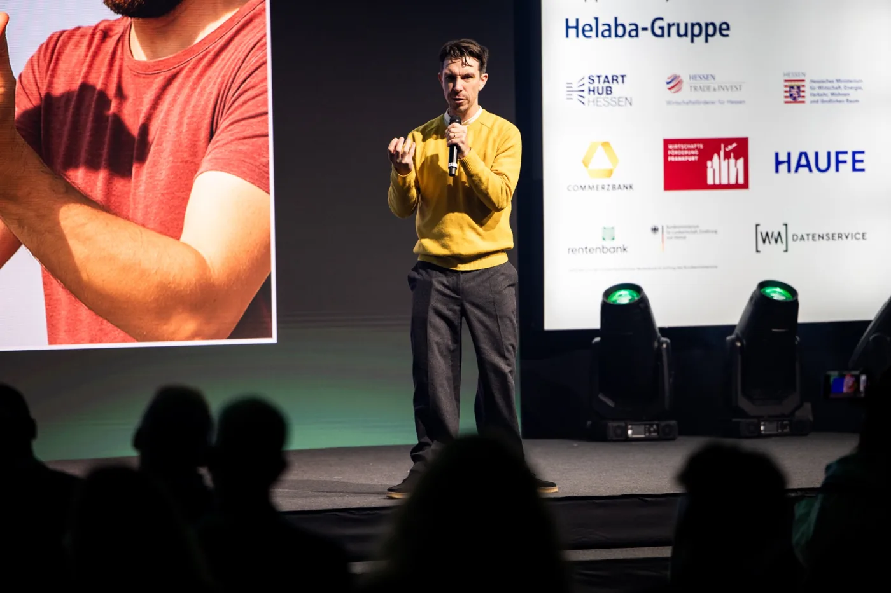
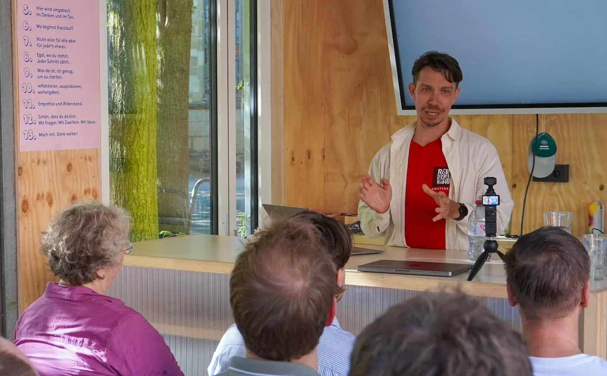
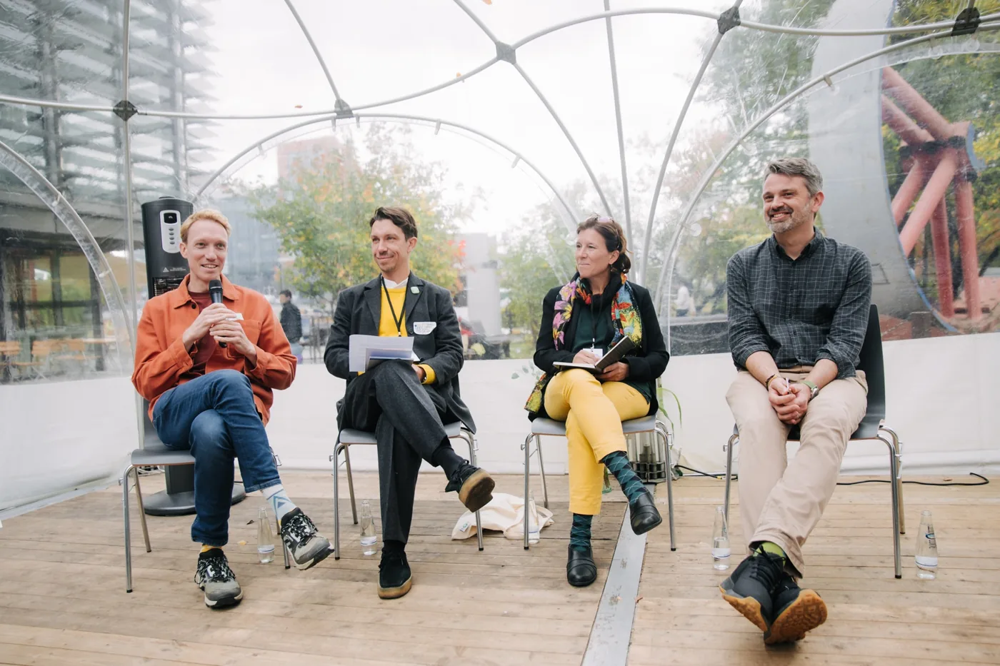
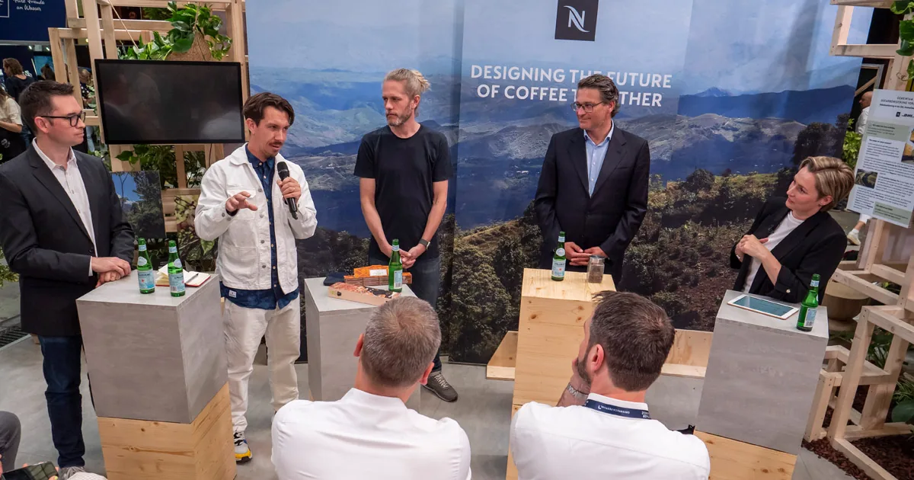
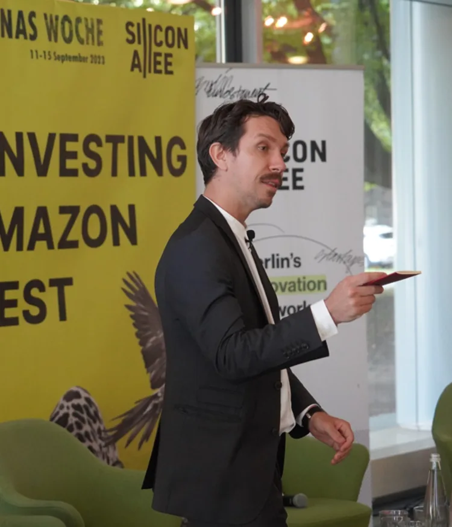

01ON STAGE
Hosting & Moderation
Warm, well-prepared hosting that keeps the room engaged and the conversation moving. Main stages, panels and live interviews in English or German.
Plan an eventOn stage. In workshops. Through play. On camera. I get people talking, thinking and involved.

Selected experience
Warm, well-prepared hosting that keeps the room engaged and the conversation moving. Main stages, panels and live interviews in English or German.
Plan an eventHands-on sessions for founders, students and teams. Make business models tangible, explore sustainability, or turn a promising idea into a clearer pitch.
Build a sessionGive strangers a shared activity and a better starting question. Ping Pong Parley combines movement, play and prompts to help people connect.
Bring people togetherCurious conversations with interesting humans. Street interviews, live conversations and new audio and video formats, built on a background in digital media.
Talk about a format
Mainstage hosting, panel conversations, advisory work and a Pitch Olympics win.

Guest teaching and entrepreneurship work with WHU, ESMT, emlyon and the University of Münster.

Creating space for different perspectives, useful follow-ups and conversations that go somewhere.

Founder and investor experience, including work with early-stage teams that collectively raised €10m+.
A short excerpt from tech for, hosted by Infineon, on the impact of technology and the challenge of change.
32-second event clip · EnglishSubtitles are included in the original clip.
People don’t need another event to sit through. They need a reason to join in.
THE THREAD THROUGH IT ALL: PARTICIPATION.
Australian perspective.
Berlin base. Human focus.
I’m a host, facilitator, educator and media maker. My career has taken me through digital media in New York, my own agency in Australia, and startups, investing, teaching and live events in Europe.
At VICE / Noisey and Network A, I worked on growing digital audiences. Today, I’m interested in what happens when people become part of the conversation — in a classroom, at a conference, around a ping pong table or in front of a microphone.
I’m at my best with real people in real rooms: asking a useful question, making a complicated idea tangible, and helping people find their way into the discussion.
I work in English and German. Alongside live work, I’m developing street-interview and radio formats in Berlin, with radio training at ALEX.
A conference, classroom, workshop, networking experiment or interview format. Tell me who’s in the room and what you’d like to happen.